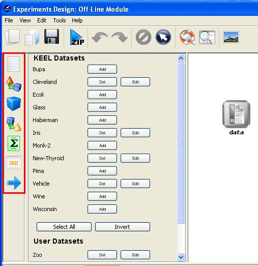
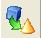
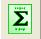

Data sets: Modify the data sets of the experiments.
Data sets: Modify the data sets of the experiments.Experiment graph
The experiment graph shows the components of the current experiment and describes the relationships between them. The user can add new components by using the left menu:

This menu has the following categories available:
Data sets: Modify the data sets of the experiments.
 Preprocessing methods: Preprocess over the initial data sets.
Preprocessing methods: Preprocess over the initial data sets.
 Standard methods: Data mining methods.
Standard methods: Data mining methods.
 Postprocessing methods: Post-process over the results of standard methods.
 Statistical tests: Statistical procedures to contrast the results achieved in the experiment.
 Visualization modules: Show the results of the experiments in an upgraded way.
Visualization modules: Show the results of the experiments in an upgraded way.
 Connections: Links between the components of the experiment.
Connections: Links between the components of the experiment.